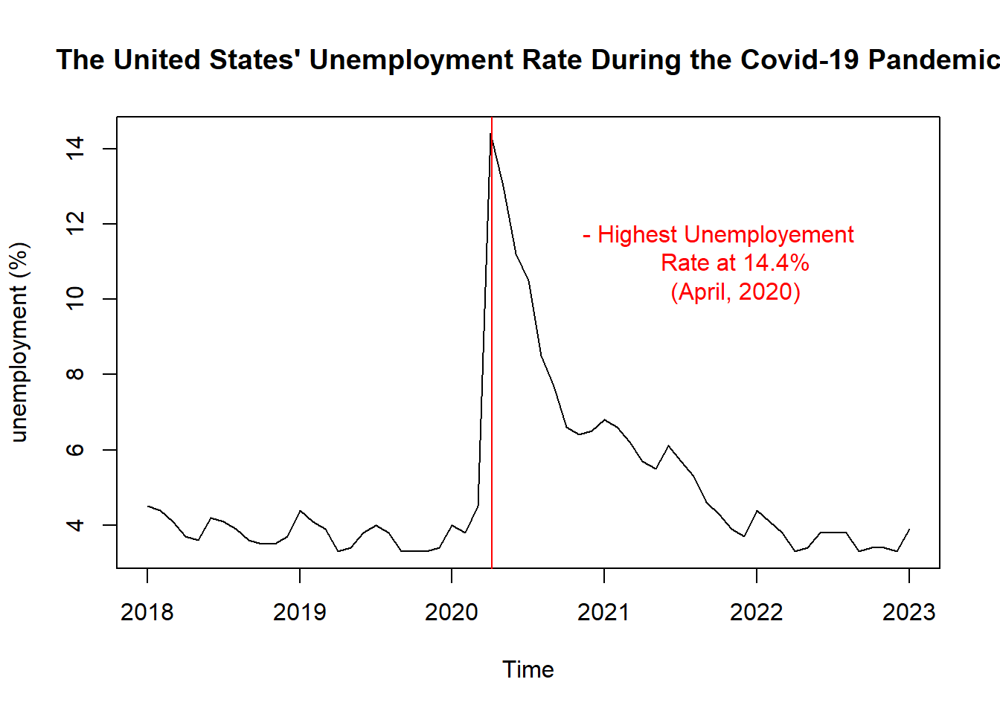
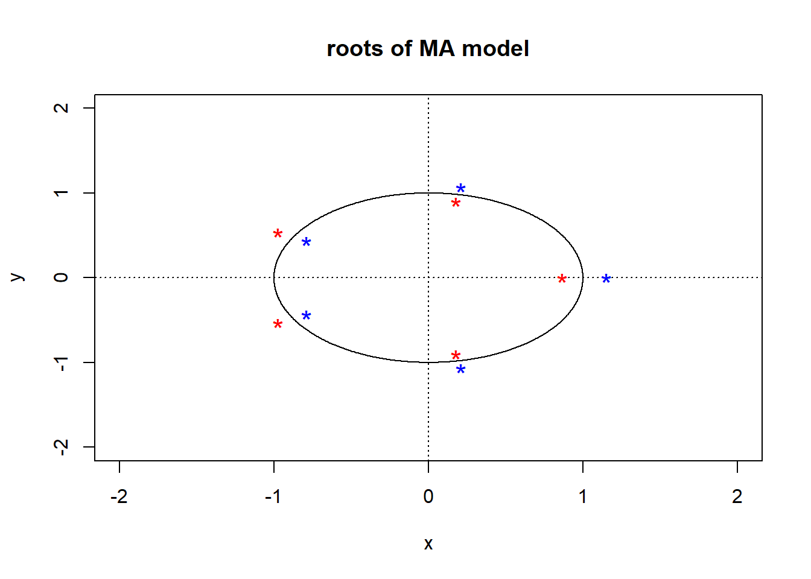

Forecasting the United States’ Theoretical Unemployment Rate in the Absence of the Covid-19 Pandemic
Abstract
The purpose of this time series project is to forecast the United States’ unemployment rate into the years 2020 through 2023 using data from 2010 through 2018 with 2019 as validation. The main questions addressed in this analysis are: how do the predicted unemployment levels from January of 2020 to the present differ from the observations seen with the Covid-19 Pandemic? Are the unemployment rates in the past three to four years much higher than what a predictive model would forecast?
By using a Box-Cox transformation to stabilize the variance and then differencing to detrend and deseasonalilze the data, I was able to examine the Autocorrelation Function coefficients to identify preliminary Seasonal Auto Regressive Integrated Moving Average (SARIMA) models. By comparing the Akaike Information Criterion of the final stationary and invertible candidate models, a SARIMA(3,1,1)(0,1,1) s=12 model was identified as the best model. Residual analysis and diagnostic checking was performed on the fitted model to determine its appropriateness to forecast future values.
Using the fitted model, I was able to validate the model’s ability to forecast into the year 2019. I then observed and compared the model’s predicted values with the actual time series of the United State’s unemployment rate through October of 2023. I found that not only do current unemployment rates lie above the forecast 95% confidence interval, but they are also two times higher than the predicted unemployment rate, meaning twice as many Americans are out of work than what the SARIMA model forecasts in the absence of the Covid-19 Pandemic.
Introduction
This time series analysis project uses data on the United States’ unemployment rate reported in percentage values at monthly increments. The data was obtained from the Federal Reserve Economic Data of the Federal Reserve Bank of St. Louis. The unemployment rate is calculated as the number of unemployed persons as a percentage of the labor force. The labor force is considered as people 16 years old or above within the United States, who do not reside in institutions (penal, mental, homes for aged), and are not on active duty in the military. The original data contains the unemployment rate between January, 1949 and October, 2023. As a reflection of economic stability, the unemployment rate is highly dependent on economic events such as recessions that can be seen in past years. Due to the Great Recession of 2008 which doubled the unemployment rate in one year (Duggan, 2023), this project begins with data from January, 2010 and onward for forecasting purposes.
The Covid-19 Pandemic induced a recession in 2020 where businesses suspended operations or closed in some cases resulting in large numbers of layoffs that increased the unemployment rate from 3.4% in December of 2019 to a high of 14.4% in April of 2020 (“Unemployment Rate (UNRATENSA)”, 2023). This anomalous event spiked the unemployment rate in a short period of time, and as businesses reopened and Covid-19 was contained, this number has decreased again to almost pre-pandemic rates.
Using data from 2010 to 2018, leaving 2019 for validation, I want to predict the unemployment rate into the years 2020 through 2023 and compare and contrast these predicted values to the observed unemployment rate time series during and after the Covid-19 Pandemic.
Forecasting unemployment rates is important to measure future economic stability. Being able to compare predictions to observations when an anomalous event happens allows us to measure the impact significance to prepare for future events.
Below we can visualize the observed unemployment rate from January of 2010 to the present:
A closer look at the Pandemic:

Training and Testing Sets
I will be using the years 2010-2018 for the training set and will leave the year 2019 as the testing set for validation of forecasts.
Analyzing Time Series Plot of Training Set
Below is the time series plot of the training set or data from 01-01-2010 to 12-01-2018:
The plot shows a clear negative trend, as well as seasonality that follows a period of 12 months. There also appears to be a slight change in variance over time.
Transformation
Taking a look at a histogram of the data will give more information on if the data should be transformed after seeing that there is non constant variance.
The histogram is not normal, so I will check a Box-Cox transformation.
[1] 0.2626263The optimal value of lambda is 0.2626263, so I will use this value to transform the data with the following transformation:
\[ X = Original Data \] \[ Y = Transformed\space Data \]
\[ Y = (X^\lambda - 1)/\lambda \] Thus: \[ Transformed \space Data = ({Original \space Data}^{0.2626263} - 1)/0.2626263 \]
Taking a look at the time series plot of the Box-Cox transformed data:
The variance appears more stable. I will also look at the histogram of the transformed data:
The histogram of the transformed data is not more normal than the original data, however the variance has decreased from 4.084399 to 0.2274075 so I will keep the Box-Cox transformation.
Differencing
I will examine the Decomposition of the transformed data to determine the neccessity for differencing.
There is a clear trend and seasonality shown in the decomposition.
The slow decay seen in the ACF plot of the transformed data indicates non-stationarity and there is also visible seasonality. I will begin by differencing at lag 1 to account for the trend in the time series.
Differencing at Lag 1
The time series plot of the transformed data differenced at lag 1 shows constant mean and variance with no trend. I will also look at the ACF plot to check for seasonality.
The ACF plot indicates the data is still not stationary, so I will difference at lag 12 to account for the seasonality in the data.
Differencing at Lag 12
The time series plot of the transformed data differenced at lag 12 shows constant mean and variance with no trend. I will also look at the ACF plot to check for stationarity.
ACF decay corresponds to a stationary process.
Comparing Differenced Data
I will take a look at the histograms one more time to compare the normality of the transformed data and its differences.
The Box-Cox transformed data differenced at lag 1 and 12 appears to be more normally distributed than the others, as well as having decreased variance, therefore I will continue with this data to identify the preliminary models.
Identifying Preliminary Models
To identify the candidate models, I will look at the ACF and PACF plots of the transformed data differenced at Lags 1 and 12.
Frist considerations:
The ACF plot shows large spikes at lags 1, 7, and 12. Some SMA models to consider are:
SARIMA(0,1,1)(0,1,1) s=12
SARIMA(0,1,7)(0,1,1) s=12
I am also considering MA(12).
Second considerations
I am also keeping in mind that the ACF could be oscillating, which could suggest an AR or SAR model:
The PACF plot shows large coefficients at lags 1, 2, 3, 11, and 12. An SAR model to try:
- SARIMA(1,1,0)(1,1,0) s=12
I am also considering AR(12).
Identifying Coefficients and Model Summaries
SARIMA(0,1,1)(0,1,1) s=12:
I will begin with the first candidate model: SARIMA(0,1,1)(0,1,1) s=12. Below is a summary of the fitted model.
Registered S3 method overwritten by 'quantmod':
method from
as.zoo.data.frame zoo
Call:
arima(x = bc_unemployment, order = c(0, 1, 1), seasonal = list(order = c(0,
1, 1), period = 12), method = "ML")
Coefficients:
ma1 sma1
-0.4433 -0.8196
s.e. 0.1288 0.1655
sigma^2 estimated as 0.001568: log likelihood = 165.33, aic = -324.65
Training set error measures:
ME RMSE MAE MPE MAPE MASE
Training set -0.000581133 0.0371597 0.0283185 -0.02039254 1.311623 0.3975893
ACF1
Training set 0.09180784Both coefficients are within (-1,1) indicating the model is invertible. I will note that the AICc value is -324.65.
SARIMA(0,1,7)(0,1,1) s=12
Second, I have the candidate model: SARIMA(0,1,7)(0,1,1) s=12. Below is a summary of the fitted model.
Call:
arima(x = bc_unemployment, order = c(0, 1, 7), seasonal = list(order = c(0,
1, 1), period = 12), method = "ML")
Coefficients:
ma1 ma2 ma3 ma4 ma5 ma6 ma7 sma1
-0.4058 -0.0748 -0.1606 -0.0814 0.2641 0.2601 -0.1529 -0.9998
s.e. 0.1051 0.1135 0.1018 0.1211 0.1005 0.1230 0.1083 0.2879
sigma^2 estimated as 0.001146: log likelihood = 172.75, aic = -327.5
Training set error measures:
ME RMSE MAE MPE MAPE MASE
Training set -0.0003788741 0.03177519 0.02361649 -0.01123808 1.092566 0.3315735
ACF1
Training set 0.006856686Using the coefficient 95% confidence intervals, I see that 0 lies within the confidence intervals at coefficients ma2, ma3, ma4, and ma7. Fixing for this, we then have the following summary.
Call:
arima(x = bc_unemployment, order = c(0, 1, 7), seasonal = list(order = c(0,
1, 0), period = 12), fixed = c(NA, 0, 0, 0, NA, NA, 0), method = "ML")
Coefficients:
ma1 ma2 ma3 ma4 ma5 ma6 ma7
-0.3912 0 0 0 0.3124 0.4353 0
s.e. 0.1579 0 0 0 0.1168 0.2030 0
sigma^2 estimated as 0.002201: log likelihood = 151.7, aic = -295.39
Training set error measures:
ME RMSE MAE MPE MAPE MASE
Training set 0.0003164417 0.04401965 0.03226212 0.02220789 1.501236 0.4529574
ACF1
Training set -0.0134093This model has an AICc of -295.39, however I need to check that the model is invertible. Below is a visualization of the roots (red) of the MA polynomial.

Since not all roots of the MA polynomial lie outside the unit circle, the model is not invertible. The SARIMA(0,1,1)(0,1,1) s=12 remains as the candidate for now.
MA(12)
Next, I have the summary of the fitted MA(12) model.
Call:
arima(x = bc_unemployment, order = c(0, 1, 12), seasonal = list(order = c(0,
1, 0), period = 12), method = "ML")
Coefficients:
ma1 ma2 ma3 ma4 ma5 ma6 ma7 ma8
-0.3204 -0.0557 -0.2956 0.0568 0.1955 0.0822 -0.1458 0.0071
s.e. 0.1420 0.1444 0.1297 0.1324 0.1471 0.1428 0.1282 0.1442
ma9 ma10 ma11 ma12
-0.0863 0.2991 -0.0090 -0.7278
s.e. 0.1493 0.1315 0.1888 0.1591
sigma^2 estimated as 0.00132: log likelihood = 171.51, aic = -317.02
Training set error measures:
ME RMSE MAE MPE MAPE MASE
Training set -0.000618592 0.03408784 0.02563461 -0.0111135 1.186016 0.3599077
ACF1
Training set -0.09433029Using the coefficient 95% confidence intervals, I see that 0 lies within the confidence intervals at coefficients ma2, ma4, ma5, ma6, ma7, ma8, ma9, and ma11. Fixing for this, we then have the following summary.
Call:
arima(x = bc_unemployment, order = c(0, 1, 12), seasonal = list(order = c(0,
1, 0), period = 12), fixed = c(NA, 0, NA, 0, 0, 0, 0, 0, 0, NA, 0, NA),
method = "ML")
Coefficients:
ma1 ma2 ma3 ma4 ma5 ma6 ma7 ma8 ma9 ma10 ma11
-0.3020 0 -0.2158 0 0 0 0 0 0 0.2743 0
s.e. 0.0877 0 0.1137 0 0 0 0 0 0 0.1050 0
ma12
-0.8042
s.e. 0.1520
sigma^2 estimated as 0.001369: log likelihood = 168.77, aic = -327.55
Training set error measures:
ME RMSE MAE MPE MAPE MASE
Training set -0.0008435405 0.03472159 0.02576233 -0.02913239 1.184669 0.3617009
ACF1
Training set -0.0923251There is now a 0 within the confidence interval for the ma3 coefficient. So the final model summary for the MA(12) model is below.
Call:
arima(x = bc_unemployment, order = c(0, 1, 12), seasonal = list(order = c(0,
1, 0), period = 12), fixed = c(NA, 0, 0, 0, 0, 0, 0, 0, 0, NA, 0, NA), method = "ML")
Coefficients:
ma1 ma2 ma3 ma4 ma5 ma6 ma7 ma8 ma9 ma10 ma11 ma12
-0.3457 0 0 0 0 0 0 0 0 0.3354 0 -0.9446
s.e. 0.1182 0 0 0 0 0 0 0 0 0.1425 0 0.1516
sigma^2 estimated as 0.001235: log likelihood = 167.21, aic = -326.42
Training set error measures:
ME RMSE MAE MPE MAPE MASE
Training set -0.0006159509 0.03297398 0.02492804 -0.01655869 1.144232 0.3499876
ACF1
Training set -0.112986This model has an AICc value of -326.42, however I need to check that the model is invertible. Below is a visualization of the roots (red) of the MA polynomial.
Since not all roots of the MA polynomial lie outside the unit circle, the model is not invertible. The SARIMA(0,1,1)(0,1,1) s=12 remains as the candidate for now.
SARIMA(1,1,0)(1,1,0) s=12
Due to the possible decay I saw in the ACF plot of the differenced data, I am also considering the SARIMA(1,1,0)(1,1,0) s=12 model and below is a summary of the fitted model.
Call:
arima(x = bc_unemployment, order = c(1, 1, 0), seasonal = list(order = c(1,
1, 0), period = 12), method = "ML")
Coefficients:
ar1 sar1
-0.2172 -0.5605
s.e. 0.1005 0.0818
sigma^2 estimated as 0.001904: log likelihood = 160.45, aic = -314.9
Training set error measures:
ME RMSE MAE MPE MAPE MASE
Training set 0.0003003032 0.04093835 0.03163286 0.02096746 1.469947 0.4441226
ACF1
Training set -0.02973299Both coefficients are within (-1,1), indicating the model is stationary. I will note that the AICc value is -314.9
AR(12)
Next I have the summary of the fitted AR(12) model.
Call:
arima(x = bc_unemployment, order = c(12, 1, 0), seasonal = list(order = c(0,
1, 0), period = 12), method = "ML")
Coefficients:
ar1 ar2 ar3 ar4 ar5 ar6 ar7 ar8
-0.2831 -0.1303 -0.1247 -0.0834 -0.0196 0.1251 -0.0998 -0.0368
s.e. 0.0946 0.0970 0.0966 0.0989 0.1001 0.1032 0.1001 0.0997
ar9 ar10 ar11 ar12
0.0430 0.1708 0.1729 -0.3894
s.e. 0.1007 0.1050 0.1049 0.0994
sigma^2 estimated as 0.001625: log likelihood = 168.11, aic = -310.22
Training set error measures:
ME RMSE MAE MPE MAPE MASE
Training set 0.0002981154 0.03782493 0.02797456 0.02067937 1.293941 0.3927603
ACF1
Training set -0.0084127Using the coefficient 95% confidence intervals, I see that 0 lies within the confidence intervals at coefficients ar2, ar3, ar4, ar5, ar6, ar7, ar8, ar9, ar10, and ar11. Fixing for this, we then have the following summary.
Call:
arima(x = bc_unemployment, order = c(12, 1, 0), seasonal = list(order = c(0,
1, 0), period = 12), fixed = c(NA, 0, 0, 0, 0, 0, 0, 0, 0, 0, 0, NA), method = "ML")
Coefficients:
ar1 ar2 ar3 ar4 ar5 ar6 ar7 ar8 ar9 ar10 ar11 ar12
-0.1135 0 0 0 0 0 0 0 0 0 0 -0.5415
s.e. 0.0831 0 0 0 0 0 0 0 0 0 0 0.0834
sigma^2 estimated as 0.001965: log likelihood = 159.1, aic = -312.2
Training set error measures:
ME RMSE MAE MPE MAPE MASE
Training set 0.0003152606 0.0415873 0.03190487 0.02248603 1.479125 0.4479416
ACF1
Training set -0.1071929There is now a 0 within the confidence interval for the ar1 coefficient. So the final model summary for the MA(12) model is below.
Call:
arima(x = bc_unemployment, order = c(12, 1, 0), seasonal = list(order = c(0,
1, 0), period = 12), fixed = c(0, 0, 0, 0, 0, 0, 0, 0, 0, 0, 0, NA), method = "ML")
Coefficients:
ar1 ar2 ar3 ar4 ar5 ar6 ar7 ar8 ar9 ar10 ar11 ar12
0 0 0 0 0 0 0 0 0 0 0 -0.5637
s.e. 0 0 0 0 0 0 0 0 0 0 0 0.0817
sigma^2 estimated as 0.001997: log likelihood = 158.17, aic = -312.34
Training set error measures:
ME RMSE MAE MPE MAPE MASE
Training set 0.0003058091 0.04192702 0.03239767 0.02188477 1.499944 0.4548605
ACF1
Training set -0.2133004The only coefficient left is for ar12 and it is within (-1,1) thus the model is stationary. I will note that the AICc value is -312.34
Comparing Models
The candidate models which are both stationary and invertible have the following AICc values:
SARIMA(0,1,1)(0,1,1) s=12
- AICc = -324.65
SARIMA(1,1,0)(1,1,0) s=12
- AICc = -314.9
AR(12)
- AICc = -312.34
Based on this information, I will continue with the SARIMA(0,1,1)(0,1,1) s=12 model for diagnostic checking since it has the lowest AICc value of -324.65.
Chosen Model: SARIMA(0,1,1)(0,1,1) s=12
\[ (1-B)(1-B^{12}){X_t} = (1+0.4433B)(1+0.8196B^{12}){Z_t} \space \space \] \[ Where \space {Z_t} \sim WN(0,{\sigma_Z}^2) \]
Residual Analysis and Diagnostic Checking
Visualizing Residuals
Below are visualizations of the SARIMA(0,1,1)(0,1,1) s=12 model’s residuals to check that they are Gaussian and follow a White Noise pattern.
The plotted residuals do resemble white noise and the trend and mean appear to coincide at about 0. The residuals distribution is approximately normal centered at 0. In the qq plot, the dots do follow close to the line.
ACF and PACF Plots of Residuals

I want all coefficients at lags > 1 to be within the confidence intervals. There are a few lags that have coefficients slightly outside the confidence interval, so I will check if my residuals are white noise using the ar() command:
Call:
ar(x = residuals, aic = TRUE, order.max = NULL, method = c("yule-walker"))
Coefficients:
1 2 3
0.0732 -0.1273 -0.2159
Order selected 3 sigma^2 estimated as 0.001325The output of this shows that I need to add 3 to p in my model and test the model: SARIMA(3,1,1)(0,1,1) s=12:
Call:
arima(x = bc_unemployment, order = c(3, 1, 1), seasonal = list(order = c(0,
1, 1), period = 12), method = "ML")
Coefficients:
ar1 ar2 ar3 ma1 sma1
-0.0050 -0.1554 -0.267 -0.3538 -0.9899
s.e. 0.1996 0.1116 0.111 0.1887 0.6673
sigma^2 estimated as 0.001258: log likelihood = 169.53, aic = -327.06
Training set error measures:
ME RMSE MAE MPE MAPE MASE
Training set -0.001009832 0.03328663 0.02493871 -0.03410548 1.157935 0.3501373
ACF1
Training set -0.02363977I will now analyze the residuals of this model.
Visualizing Residuals
The plotted residuals do resemble white noise and the trend and mean appear to coincide at about 0. The residuals distribution is approximately normal centered at 0. In the qq plot, the dots do follow close to the line.
ACF and PACF Plots of Residuals
All of the coefficients lie within the confidence interval! I will continue to the following tests.
Shapiro-Wilk Test of Normality
I will also be using the Shapiro-Wilk Test to check that the residuals are normally distributed.
Shapiro-Wilk normality test
data: residuals
W = 0.9829, p-value = 0.1809The p-value is 0.1809, which is larger than 0.05, so I fail to reject the normality hypothesis of the residuals.
Portmanteau Statistics
Another part of diagnostic checking are the Portmanteau Statistics, checking for p-values < 0.05.
Both the Box-Pierce and Ljung-Box Tests are to test for linear dependence of the residuals. Since there are 108 observations in the training set, lag = 10, and since I have 5 estimated coefficients (ar1, ar2, ar3, ma1, and sma1) the fitdf = 5 for these two tests.
The McLeod-Li Test is to test if the residuals are correlated and uses the same lag = 10 and fitdf = 0.
Box-Pierce Test
Box-Pierce test
data: residuals
X-squared = 8.3883, df = 5, p-value = 0.1361Ljung-Box Test
Box-Ljung test
data: residuals
X-squared = 9.1427, df = 5, p-value = 0.1035McLeod-Li Test
Box-Ljung test
data: residuals^2
X-squared = 9.8049, df = 10, p-value = 0.4578P-values for both the Box-Pierce and Ljung-Box Tests are above 0.05, meaning I fail to reject the hypothesis that the residuals are linearly independent.
The p-value for the McLeod-Li Test is greater than 0.05, meaning I fail to reject the hypothesis that the residuals are uncorrelated.
This model appears to work the best out of all candidates, so I will continue to forecasting based on the residuals passing all diagnostic checks.
Chosen Model: SARIMA(3,1,1)(0,1,1) s=12
\[ (1 + 0.005B + 0.1554B^2 + 0.267B^3)(1-B)(1-B^{12}){X_t} = (1-0.9899B^{12})(1 - 0.3538B){Z_t} \space \space \] \[ Where \space {Z_t} \sim WN(0,{\sigma_Z}^2) \]
Forecasting
Forecasting on Transformed Data
Below are the plotted forecast values on the Box-Cox transformed data
Forecasting on Original Data
After transforming the predicted values back to the original data values, below are the plotted forecast values on the original unemployment data as well as the test set values.
Below is a closer look at the model’s predicted values (green) compared to the observed test values (red) as well as the 95% confidence interval for forecast values (blue).
Looking to the test values (red) which almost all lie within the 95% confidence interval, I am able to validate the SARIMA(3,1,1)(0,1,1) s=12 model’s ability to accurately forecast unemployment rates into the year 2019.
Forecasting through 2023
Below is the predicted unemployment rate time series through the years 2020-2023 as compared to the observed times series.
We can take a closer look at the years 2019 through October, 2023.
While the observed unemployment values of 2019 appear to coincide with the prediction intervals, there is a large difference beginning in early 2020. Unemployment rates remain much higher than the predicted interval until the end of 2021. From the beginning of 2022 and up through October of 2023, unemployment rates are still higher than the upper side of the prediction interval.
The predicted unemployment rate for October of 2023 based on data from 2010 to 2018 is 1.98%, whereas the observed unemployment rate at the beginning of October this year was 3.6%, almost twice as high. Because of the seasonality, the best comparison to pre-pandemic levels would be the October prior to the start of the Pandemic. The unemployment rate at the beginning of October, 2019 was 3.3% so levels are still higher. It would be interesting to compare the unemployment rate of March, 2024 to March, 2020 to see if unemployment finally decreases to pre-pandemic levels.
Conclusion
The goal of this project was to forecast unemployment rates through 2023 using data from 2010-2018 fitted to a Seasonal Autoregressive Integrated Moving Average (SARIMA) model.
Using the SARIMA(3,1,1)(0,1,1) s=12 model:
\[ (1 + 0.005B + 0.1554B^2 + 0.267B^3)(1-B)(1-B^{12}){X_t} = (1-0.9899B^{12})(1 - 0.3538B){Z_t} \space \space \] \[ Where \space {Z_t} \sim WN(0,{\sigma_Z}^2) \]
I hoped to compare and contrast the unemployment rates observed during and after the Covid-19 Pandemic to the predicted values. I found there was a large spike in the unemployment rate during the beginning months of 2020 which decreased during the second half of the year, but did not decrease to pre-pandemic levels until 2022, and were still slightly higher. Based on the trend seen for the unemployment level from 2010 to 2018, the unemployment rate is predicted to be just 1.98% in October, and 1.97% on December 1, 2023. These predictions are proportionally about half of what the unemployment levels are today, meaning twice as many Americans are out of work than what this model predicts if the Covid-19 Pandemic had not occurred.
That being said, anomalous events have occurred throughout American history that disrupt the trend in unemployment levels, therefore something else could have impacted unemployment rates during this time without the Pandemic. It is worth noting that April, 2020 did mark the largest unemployment rate in United States’ history since 1940 after the lasting effects of the Great Depression (Amadeo, 2022). Comparing these forecast values to the unemployment rates observed after the Covid-19 Pandemic can help national and state governments prepare for the impact another anomalous event may have on the unemployment rate, and then predict the amount of time it may take to reach unemployment levels prior to the event.
I want to acknowledge Professor Raisa Feldman and Teaching Assistant Cosmin Borsa for guiding me through this project and providing assistance and understanding.
References
Amadeo, Kimberly. “Historical US Unemployment Rate by Year.” The Balance, The Balance, 6 Dec. 2022, www.thebalancemoney.com/unemployment-rate-by-year-3305506#:~:text=The%20highest%20rate%20of%20U.S.,14%25%20from%201931%20to%201940.
Duggan, Wayne. “A Short h=History of the Great Recession.” Forbes, Forbes Magazine, 21 June 2023, www.forbes.com/advisor/investing/great-recession/#:~:text=The%20Great%20Recession%20of%202008,down%2057%25%20from%20its%20highs.),.
“Unemployment Rate (UNRATENSA).” FRED, 3 Nov. 2023, fred.stlouisfed.org/series/UNRATENSA.
Appendix
The following is code for each of the visuals, model summaries, and tests performed in this report.
Visualizing unemployment time series from 2010 to present:
unemployment <- read.csv("data/unemployment.csv")
# converting to datetime object
unemployment[['Date']] <- as.Date(unemployment[[1]],
format ="%Y-%d-%m")
unemployment_ts <- ts(unemployment$unemployment , frequency = 12, start=c(2010,1), end = c(2023,10))
# visualize data from 2010 to present
plot.ts(unemployment_ts, ylab = "unemployment (%)", main = "The United States' Unemployment Rate From 2010 to Present")
abline(v=c(2020.2,3), col = "red")
text(x = c(2017.75,3), y = 12,"First Lockdown -
March 2020", col = "red")Zoomed in time series:
unemployment_ts2 <- ts(unemployment$unemployment[97:166], frequency = 12, start=c(2018), end = c(2023))
# visualize data from 2010 to present
plot.ts(unemployment_ts2, ylab = "unemployment (%)", main = "The United States' Unemployment Rate During the Covid-19 Pandemic")
abline(v=c(4,2020.26), col = "red")
text(x = c(3,2021.75), y = 11,"- Highest Unemployement
Rate at 14.4%
(April, 2020)", col = "red")Training and testing sets:
train <- unemployment_ts[c(1:108)]
# leaving out 12 data points for testing set
test <- unemployment_ts[c(109:120)]Time series plot of training set:
plot(1:length(train),train, main = "Time Series of Training Set
(2010-2018)", type = 'l',xlab='index', ylab = "unemployment (%)")
index = 1: length(train)
trend <- lm(train ~ index)
abline(trend, col="red")
abline(h=mean(train) , col='blue')
text(x = c(80), y = 7.5,"Mean Unemployment
Rate = 6.51%", col = "blue")Histogram of training data:
hist(train, col="light blue", xlab="", main="histogram; unemployment data")Box-Cox diagram and lambda value:
library(MASS)
bcTransform <- boxcox(train~as.numeric(1:length(train)))
# optimal lambda
lambda <- bcTransform$x[which(bcTransform$y == max(bcTransform$y))]
lambdaTime series plot of Box-Cox transformed data:
bc_unemployment <- lambda**(-1)*(train**(lambda) - 1)
plot(1:length(bc_unemployment),bc_unemployment, main = "Time Series of Box-Cox Transformed Data", type = 'l',xlab='index', ylab="unemployment (%)")
index = 1: length(bc_unemployment)
trend <- lm(bc_unemployment ~ index)
abline(trend, col="red")
abline(h=mean(bc_unemployment) , col='blue')Histogram of Box-Cox transformed data:
hist(bc_unemployment, col="light blue", xlab="", main="histogram; Box-Cox Transformed unemployment data")Decomposition of Box-Cox transformed data:
# install.packages("ggplot2")
# install.packages("ggfortify")
library(ggplot2)
y <- ts(as.ts(bc_unemployment), frequency = 12)
decomp <- decompose(y)
plot(decomp)ACF plot of Box-Cox transformed data:
acf(bc_unemployment,lag.max=60, main="ACF of the Box-Cox Transformed Unemployment Data") Differencing Box-Cox transformed data at lag 1 and plotting time series:
dunemployment <- diff(bc_unemployment, 1)
plot(1:length(dunemployment),dunemployment, main = "Transformed Data Differenced at Lag 1", type = 'l',xlab='index')
index = 1: length(dunemployment)
trend <- lm(dunemployment ~ index)
abline(trend, col="red")
abline(h=mean(dunemployment) , col='blue')ACF of data differenced at lag 1:
acf(dunemployment,lag.max=60, main="ACF of the Transformed Data Differenced at Lag 1")Differencing Box-Cox transformed data at lag 12 and plotting time series:
ddunemployment <- diff(dunemployment, 12)
plot(1:length(ddunemployment),ddunemployment, main = "Time Series", type = 'l',xlab='index')
index = 1: length(ddunemployment)
trend <- lm(ddunemployment ~ index)
abline(trend, col="red")
abline(h=mean(ddunemployment) , col='blue')ACF of data differenced at lag 1 and 12:
acf(ddunemployment,lag.max=60, main="ACF of the Transformed Data Differenced at Lag 1 and 12")Histograms of Box-Cox and differenced data
par(mfrow = c(3,1))
hist(bc_unemployment, col="light blue", xlab="", main="histogram; Box-Cox Transformed unemployment data")
hist(dunemployment, col="light blue", xlab="", main="histogram; Box-Cox Transformed unemployment data differenced at lag 1")
hist(ddunemployment, col="light blue", xlab="", main="histogram; Box-Cox Transformed unemployment data differenced at lag 1 and 12")ACF and PACF plots of differenced data:
par(mfrow = c(1,2))
acf(ddunemployment,lag.max=60, main="ACF")
pacf(ddunemployment,lag.max=60, main="PACF") Fitting SARIMA(0,1,1)(0,1,1) s=12 model:
library(forecast)
arma_model <- arima(bc_unemployment, order = c(0,1,1), seasonal = list(order = c(0,1,1), period = 12), method="ML")
summary(arma_model)Fitting SARIMA(0,1,7)(0,1,1) s=12 model:
library(forecast)
arma_model <- arima(bc_unemployment, order = c(0,1,7), seasonal = list(order = c(0,1,1), period = 12), method="ML")
summary(arma_model)Fixing SARIMA(0,1,7)(0,1,1) s=12 model:
library(forecast)
arma_model <- arima(bc_unemployment, order = c(0,1,7), seasonal = list(order = c(0,1,0), period = 12), method="ML", fixed = c(NA,0,0,0,NA,NA,0))
summary(arma_model)Plotting roots of SARIMA(0,1,7)(0,1,1) s=12 model:
source("../labs/plot.roots.r")
plot.roots(NULL,polyroot(c(-0.3912,0,0,0,0.3124,0.4353,0)), main="roots of MA model")Fitting MA(12) model:
library(forecast)
arma_model <- arima(bc_unemployment, order = c(0,1,12), seasonal = list(order = c(0,1,0), period = 12), method="ML")
summary(arma_model)Fixing MA(12) model:
library(forecast)
arma_model <- arima(bc_unemployment, order = c(0,1,12), seasonal = list(order = c(0,1,0), period = 12), method="ML", fixed = c(NA,0,NA,0,0,0,0,0,0,NA,0,NA))
summary(arma_model)
arma_model <- arima(bc_unemployment, order = c(0,1,12), seasonal = list(order = c(0,1,0), period = 12), method="ML", fixed = c(NA,0,0,0,0,0,0,0,0,NA,0,NA))
summary(arma_model)Plotting roots of MA(12) model:
source("../labs/plot.roots.r")
plot.roots(NULL,polyroot(c(-0.3457,0,0,0,0,0,0,0,0,0.3354,0,-0.9446)), main="roots of MA model")Fitting SARIMA(1,1,0)(1,1,0) s=12 model:
library(forecast)
arma_model <- arima(bc_unemployment, order = c(1,1,0), seasonal = list(order = c(1,1,0), period = 12), method="ML")
summary(arma_model)Fitting AR(12) model:
library(forecast)
arma_model <- arima(bc_unemployment, order = c(12,1,0), seasonal = list(order = c(0,1,0), period = 12), method="ML")
summary(arma_model)Fixing AR(12) model:
arma_model <- arima(bc_unemployment, order = c(12,1,0), seasonal = list(order = c(0,1,0), period = 12), method="ML", fixed = c(NA,0,0,0,0,0,0,0,0,0,0,NA))
summary(arma_model)
arma_model <- arima(bc_unemployment, order = c(12,1,0), seasonal = list(order = c(0,1,0), period = 12), method="ML", fixed = c(0,0,0,0,0,0,0,0,0,0,0,NA))
summary(arma_model)Visualizing model residuals:
arma_model <- arima(bc_unemployment, order = c(0,1,1), seasonal = list(order = c(0,1,1), period = 12), method="ML")
par(mfrow = c(2,2))
# residuals
residuals <- residuals(arma_model)
# plotting residuals
plot(residuals, main="Plot of residuals")
# plot(1:length(time_series),time_series, main =
# "Time Series", type = 'l',xlab='index')
index = 1: length(residuals)
trend <- lm(residuals ~ index)
abline(trend, col="red")
abline(h=mean(residuals) , col='blue')
# plot the histogram of the residuals:
hist(residuals)
#q-q plot
qqnorm(residuals)
qqline(residuals)ACF and PACF plots of residuals:
acf(residuals)
pacf(residuals)AR() command
ar(residuals, aic = TRUE, order.max = NULL, method = c("yule-walker"))Shapiro-Wilk Test of Normality:
#Shapiro test for normality
shapiro.test(residuals)Portmanteau Statistics
#Box-Pierce test
Box.test(residuals, lag = 10, type = c("Box-Pierce"), fitdf = 2)
#Ljung-Box test
Box.test(residuals, lag = 10, type = c("Ljung-Box"), fitdf = 2)
#McLeod-Li test
Box.test(residuals^2, lag = 10, type = c("Ljung-Box"))Forecasting on Box-Cox transformed data:
library(forecast)
pred.tr <- predict(arma_model, n.ahead = 12)
U.tr= pred.tr$pred + 2*pred.tr$se
L.tr= pred.tr$pred - 2*pred.tr$se
ts.plot(bc_unemployment, xlim=c(1,length(bc_unemployment)+12), ylim = c(min(L.tr),max(bc_unemployment)), main = "Forecasted Predictions on Transformed Data")
lines(U.tr, col="blue", lty="dashed")
lines(L.tr, col="blue", lty="dashed")
points((length(bc_unemployment)+1):(length(bc_unemployment)+12), pred.tr$pred, col="green")
# zoom in
ts.plot(bc_unemployment, xlim=c(97,length(bc_unemployment)+12), ylim = c(min(L.tr),max(U.tr)), main = "Forecasted Predictions on Transformed Data")
lines(U.tr, col="blue", lty="dashed")
lines(L.tr, col="blue", lty="dashed")
points((length(bc_unemployment)+1):(length(bc_unemployment)+12), pred.tr$pred, col="green")Forecasting on original data:
library(forecast)
pred.tr <- predict(arma_model, n.ahead = 12)
pred.orig <- ((pred.tr$pred/lambda**(-1)) + 1)^(1/lambda)
U = ((U.tr/lambda**(-1)) + 1)^(1/lambda)
L = ((L.tr/lambda**(-1)) + 1)^(1/lambda)
ts.plot(train, xlim=c(1,length(train)), ylim = c(min(L),max(unemployment_ts)), ylab="unemployment(%)", main = "Forecasted Predictions on Original Data")
lines(U, col="blue", lty="dashed")
lines(L, col="blue", lty="dashed")
points((length(train)+1):(length(train)+12), pred.orig, col="green")
points((length(test)+97):(length(test)+108), test, col="red")Forecasting on original data - test set comparison:
# zoom in
ts.plot(train, xlim=c(109,length(train)+12), ylim = c(min(L),max(U)),ylab="unemployment(%)", main = "Forecasted Predictions on Original Data")
lines(U, col="blue", lty="dashed")
lines(L, col="blue", lty="dashed")
points((length(train)+1):(length(train)+12), pred.orig, col="green")
points((length(test)+97):(length(test)+108), test, col="red")Forecasting through 2023:
library(forecast)
pred.tr <- predict(arma_model, n.ahead = 60)
U.tr= pred.tr$pred + 2*pred.tr$se
L.tr= pred.tr$pred - 2*pred.tr$se
pred.orig <- ((pred.tr$pred/lambda**(-1)) + 1)^(1/lambda)
U = ((U.tr/lambda**(-1)) + 1)^(1/lambda)
L = ((L.tr/lambda**(-1)) + 1)^(1/lambda)
ts.plot(unemployment$unemployment, xlim=c(1,length(unemployment_ts)), ylim = c(min(L),max(unemployment$unemployment)), main = "Forecasted Predictions on Original Data")
lines(U, col="blue", lty="dashed")
lines(L, col="blue", lty="dashed")
lines((length(train)+1):(length(train)+60), pred.orig, col="red")Forecasting through 2023 (2019-2023):
pandemic <- ts(unemployment$unemployment[109:166], frequency = 12, start=c(2019,1), end = c(2023,10))
pred <- ts(pred.orig, frequency = 12, start=c(2019,1), end = c(2023,10))
# zoom in
U = ts(U, frequency = 12, start=c(2019,1), end = c(2023,10))
L = ts(L, frequency = 12, start=c(2019,1), end = c(2023,10))
plot.ts(pandemic, ylim = c(min(L), max(pandemic)), ylab = "unemployment (%)", main = "Forecasted Predictions on Original Data")
lines(U, col="blue", lty="dashed")
lines(L, col="blue", lty="dashed")
lines(pred, col="red")
abline(v=c(2020.17,3), col = "purple")
text(x = c(2019.5,3), y = 12,"First Lockdown -
March, 2020", col = "purple")Comparing predicted values to observed values:
pred
pandemic